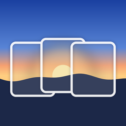

Seamline
by Kernelfusion Pty Ltd
Support
Seamline stitches overlapping photos from drones, phones and cameras into seamless, gigapixel panoramas on iPhone and iPad.
Need help? Email contact@kernelfusion.com. Please include your device model, iOS version and, if you can, the photos you were stitching.
Getting started
- Tap + and choose From Photos or From Files or SD Card, then select the overlapping photos of one panorama. Or choose Try the Sample Panorama.
- Tap Stitch. Rows, order, lens and exposure are worked out automatically.
- Pinch to zoom; long-press anywhere to see that spot at full resolution.
- Tap the share icon to export. HEIC, JPEG and PNG go to your photo library; full-resolution TIFF files go to Files › On My iPhone › Seamline › Exports.
Tips
- Drone panoramas: import the original photos, not edited copies, so Seamline can use the drone's orientation data. Sky-only frames are placed using that data.
- Phone panoramas: turn on the spot rather than walking, and keep nearby objects at a distance; close objects shift between shots and can leave small seams.
- Photos left out: photos from another flight, camera or zoom, or that don't overlap the others, are left out and listed with the reason. Tap Review to remove them or stitch with them anyway.
- Difficult sets (lots of sky or water): use Grid Assist to describe the rows and the shooting order.
- Large exports: full-resolution TIFF and maximum-size JPEG render every pixel and can take several minutes. Seamline keeps working if you lock your phone (iOS 26 and later).
- After an update: if a project opens without its panorama, tap Re-stitch.